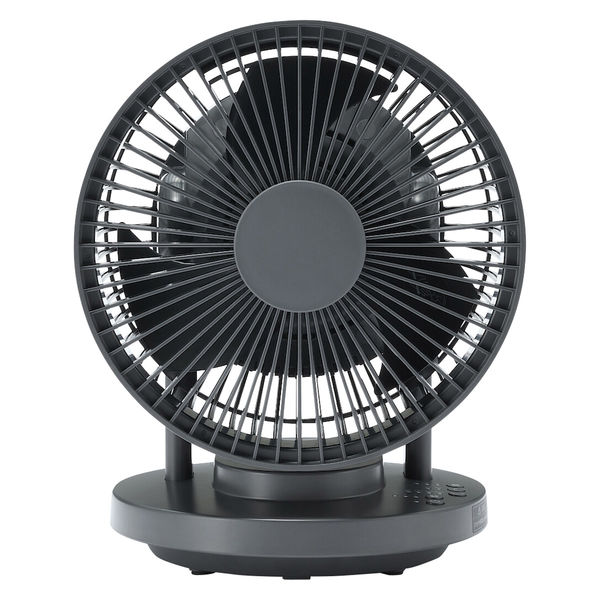
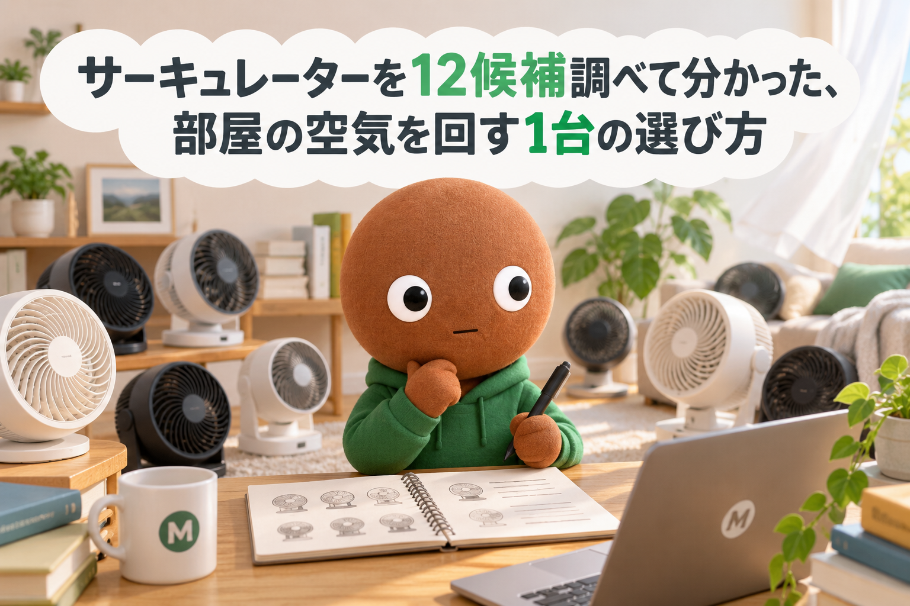
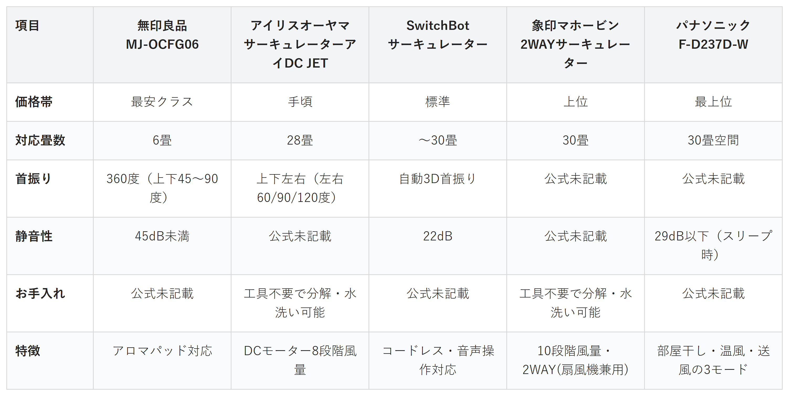

Amazonで見るエアコンをつけても部屋の奥まで冷暖房が届かない、暖房の足元だけ寒いと感じる人へ
その部屋、
空気は循環していますか？
サーキュレーター12候補を調査。畳数選びのしやすさ・静音性・足元の寒さ対策・お手入れのしやすさ・部屋干し対応から、選び方の違う5商品を比較しました。
自分に合うサーキュレーターを探す
この記事はAmazonアソシエイト・プログラムの参加者として、紹介料を得る場合があります（PR）。仕様は調査時点の情報です。
12候補から、選び方の違う5商品に絞りました。まずは気になる1台へ。向いている人・向いていない人と、低評価レビューもまとめています。
12候補を調査
5商品に厳選
低評価レビューも確認済み
結論から先に言うと：
あなたの部屋事情に合う、1台を。
横にスワイプして、5商品を見比べる
サーキュレーターと扇風機は別物です
サーキュレーターは、直進性の強い風で部屋の空気を循環させる家電です。デスク上で涼むための卓上USB扇風機とは、目的がまったく違います。
エアコンや暖房と一緒に使い、部屋の温度ムラを解消するのが本来の役割です。
選び方の基準は3つ
1つ目は「対応畳数」。部屋の広さに対して風量が足りないと、思ったほど空気が循環しません。
2つ目は「首振りの範囲」。上下左右に首振りできると、天井に溜まった暖気も効率よくかき混ぜられます。
3つ目は「静音性」。寝室や夜間に使いたいなら、運転音の数値を事前に確認したいポイントです。
価格帯にはそれなりに幅がありました。
比較表

価格帯・対応畳数・首振り・静音性・お手入れの比較（価格帯は最安クラス〜最上位の5段階）
無印良品 MJ-OCFG06
- 最安クラス
- 対応畳数6畳
- 首振り360度（上下45〜90度）
- 静音性45dB未満・アロマパッド対応
SwitchBot サーキュレーター
- 標準
- 対応畳数〜30畳
- 首振り自動3D首振り
- 静音性22dB・コードレス
アイリスオーヤマ サーキュレーターアイDC JET
- 手頃
- 対応畳数28畳
- 首振り上下左右（左右60/90/120度）
- DCモーター8段階風量・水洗い可能
象印マホービン 2WAYサーキュレーター
- 上位
- 対応畳数30畳
- 工具不要で分解・水洗い可能
- 10段階風量・2WAY(扇風機兼用)
パナソニック F-D237D-W
- 最上位
- 対応畳数30畳空間
- 静音性29dB以下（スリープ時）
- 部屋干し・温風・送風の3モード
向いてる人
- まず1台試したい人
- ワンルームで使いたい人
向いてない人
- 広いリビングで使いたい人
選ぶ決め手初めての1台で失敗したくない人は、これを選べば迷いません。
低評価レビューも見ました
今回調べた範囲では、無印良品のMJ-OCFG06について目立った低評価の指摘は見当たりませんでした。
参考：サクラチェッカーによるカテゴリ全体の傾向分析
無印良品のMJ-OCFG06は、
何畳用を選べばいいか
迷いたくない人に最も向く1台です。
対応畳数の分かりやすさと
シンプルな操作を両方兼ねるのは、
5商品でこの1台だけです。
向いてる人
- 寝室で夜も使いたい人
- コンセントの位置を選ばず置きたい人
向いてない人
- とにかく安さを優先したい人
選ぶ決め手寝ている間の空気循環を重視する人は、これを選べば安心です。
低評価レビューも見ました
今回調べた範囲では、SwitchBotのサーキュレーターについて目立った低評価の指摘は見当たりませんでした。
参考：サクラチェッカーによるカテゴリ全体の傾向分析
SwitchBotのサーキュレーターは、
運転音を気にせず
夜も使いたい人に最も向く1台です。
22dBの静音性とコードレスを
両方兼ねるのは、
5商品でこの1台だけです。
向いてる人
- 暖房の足元の寒さが気になる人
- 冷暖房効率を上げたい人
向いてない人
- 運転音を数値で確認したい人
選ぶ決め手暖房の効きにムラを感じる人は、これを選べば足元まで暖まります。
低評価レビューも見ました
今回調べた範囲では、アイリスオーヤマのサーキュレーターアイDC JETについて目立った低評価の指摘は見当たりませんでした。
参考：サクラチェッカーによるカテゴリ全体の傾向分析
アイリスオーヤマの
サーキュレーターアイDC JETは、
暖房をつけても足元が寒い人に
最も向く1台です。
上下左右の首振り角度を
段階的に選べる調整幅の広さは、
5商品でこの1台だけです。
向いてる人
- こまめに掃除したい人
- ホコリの蓄積が気になる人
向いてない人
- とにかく静音性を優先したい人
選ぶ決め手羽根の掃除を後回しにしがちな人は、これを選べば清潔に保てます。
低評価レビューも見ました
今回調べた範囲では、象印マホービンの2WAYサーキュレーターについて目立った低評価の指摘は見当たりませんでした。
参考：サクラチェッカーによるカテゴリ全体の傾向分析
象印マホービンの
2WAYサーキュレーターは、
羽根のホコリを気にせず
使いたい人に最も向く1台です。
工具不要の水洗いと2WAY設計を
両方兼ねるのは、
5商品でこの1台だけです。
向いてる人
- 部屋干しの生乾きが気になる人
- 1台で複数用途に使いたい人
向いてない人
- 価格の手頃さを優先したい人
選ぶ決め手洗濯物と冷暖房の両方に活用したい人は、これを選べば1年中使い回せます。
低評価レビューも見ました
今回調べた範囲では、パナソニックのF-D237D-Wについて目立った低評価の指摘は見当たりませんでした。
参考：サクラチェッカーによるカテゴリ全体の傾向分析
パナソニックのF-D237D-Wは、
部屋干しの洗濯物を
早く乾かしたい人に最も向く1台です。
3モード切り替えと温度差解消の
実測データを両方兼ねるのは、
5商品でこの1台だけです。
12候補をどう絞った？ 調査の経緯を見る
エアコンをつけても、部屋の奥まで冷暖房が届かない気がしませんか。冬は暖気が天井に溜まって、足元だけ寒いということもよくあります。でもサーキュレーターは種類が多くて、どれを選べばいいか迷います。
なので今回、私が部屋の空気循環用サーキュレーターのスペックを調べ比較しました。各商品ごとに、向いてる人・向いてない人も調べているので、自分に合ったサーキュレーターを探してみてください。
12候補から5つに絞りました
サーキュレーターは、価格.comのランキングだけでも数十件が並ぶジャンルです。今回は主要候補12件を調べ、価格帯・機能・出典の強さが重複しないように5商品まで絞りました。
調べたのは無印良品1機種・SwitchBot1機種・アイリスオーヤマ2機種・象印マホービン1機種・ドウシシャ1機種・パナソニック1機種・SharkNinja1機種・cado1機種・Vornado1機種・シャープ1機種・三菱電機1機種という12候補です。
アイリスオーヤマのWOOZOO PCF-BD15TEC-Wは、採用したサーキュレーターアイDC JETと同ブランドで役割が重複するため見送りました。上下左右に首振りできるDC JETの方が、暖房の足元寒さ対策に向くためそちらを採用しました。
ドウシシャのKamomefan+c livingは、低消費電力と静音性が魅力でした。ただしSwitchBotの22dBという具体的な静音数値の裏付けの強さを優先し、静音枠はSwitchBotにしました。
SharkNinjaのFlexBreezeは、コードレスで大風量という点でSwitchBotと軸が重複します。国内でのAmazon取り扱い・価格の一次情報も弱いため見送りました。
cadoのSTREAM1800Fは、除菌機能という独自の魅力があります。ただ今回選んだ5つの悩み軸（畳数・静音・首振り・お手入れ・部屋干し）のどれとも直接一致しないため、見送りました。
Vornadoの533DC-JPは、5年保証という信頼性の高さが魅力です。対応畳数は16畳までと、採用した象印・パナソニックの30畳より狭く、価格帯も近い商品と重複するため見送りました。
シャープ・三菱電機は、価格.comの満足度ランキングで上位でした。ただし評価件数が数件と少なく、出典の厚みが弱いため見送りました。
低評価の2商品も見ました
上の12候補とは別に、サクラチェッカーが要注意と判定した商品を2つ調べました。個別レビュー本文の真偽までは検証できないため、機械的に検出された事実だけを正直に書きます。
Turelarのサーキュレーターは、評価件数79件で、カテゴリ平均を大きく下回っていました。本社所在国は推定中国で、公式サイトも見当たりませんでした。
WONSEFOOのサーキュレーターは、サクラ度4/5の危険水準と判定されていました。評価件数が2026年7月に206件も減少しており、サクラレビュー削除の可能性が指摘されていました。
サクラチェッカーによると、サーキュレーターカテゴリ全体でサクラ製品が29%を占めるという言及もありました。今回私が採用した無印良品・SwitchBot・アイリスオーヤマ・象印・パナソニックは、いずれも公式サイトを持つメーカーでした。
調べてみて驚いたこと
同じ「対応畳数30畳」でも、静音性の数値を公表している商品とそうでない商品に分かれました。
サクラチェッカーでは、サーキュレーターカテゴリ全体でサクラ製品の比率が29%という言及がありました。サクラ製品は通常製品より平均31%安く設定される傾向があるという指摘もありました。
安さだけで選ぶと、粗悪品をつかんでしまうリスクがあると実感しました。
迷ったらこれ
ここまで読んでも迷ったら、対応畳数の分かりやすさとシンプルな操作を兼ねる無印良品 MJ-OCFG06が、いちばん外しにくい1台です。
Amazonで見る→よくある質問
Q. サーキュレーターと扇風機はどう違いますか。
A. 扇風機は人に直接風を当てて涼むための家電です。サーキュレーターは直進性の強い風で部屋の空気全体を循環させ、エアコンや暖房の効率を上げる目的で使います。
Q. 何畳の部屋に何畳用のサーキュレーターを選べばいいですか。
A. 対応畳数は目安です。部屋の広さぴったりではなく、対応畳数が実際の部屋より広めの商品を選ぶと、部屋の隅々まで風が届きやすくなります。
Q. エアコンと一緒に使うとき、どこに置けばいいですか。
A. エアコンの対角線上に置き、エアコンの風とは逆方向（部屋の中央や天井側）に向けると、空気が循環しやすくなります。
Q. 冬も夏と同じ使い方でいいですか。
A. 夏は冷気を循環させるため下向き、冬は天井に溜まった暖気を循環させるため上向きにするなど、季節によって向きを変えると効果的です。
Q. 24時間つけっぱなしでも大丈夫ですか。
A. 今回の5商品はいずれも連続運転を想定した設計ですが、各商品の取扱説明書で推奨される使い方を確認してから使ってください。
こんな記事も書いてます
ミートボーの調査部屋で他の記事も見る（全本）


出典
- 価格.com 扇風機・サーキュレーター満足度ランキング：kakaku.com
- マイベスト サーキュレーターのおすすめ人気ランキング：my-best.com
- 無印良品公式 360度首振り機能付きサーキュレーター6畳：muji.com
- 無印良品公式 取扱説明書PDF：muji.com
- Amazon.co.jp 無印良品 MJ-OCFG06：amazon.co.jp
- SwitchBot公式 スマートサーキュレーター：switchbot.jp
- Amazon.co.jp SwitchBot サーキュレーター 静音 首振り Alexa：amazon.co.jp
- 価格.com アイリスオーヤマ PCF-SDC15T-EC-W スペック・仕様：kakaku.com
- Amazon.co.jp アイリスオーヤマ サーキュレーターアイDC JET PCF-SDC15T-EC-W：amazon.co.jp
- Amazon.co.jp 象印マホービン 2WAYサーキュレーター RC-AA30-WA：amazon.co.jp
- パナソニック公式 サーキュレーター F-D237D発売ニュースリリース：news.panasonic.com
- Amazon.co.jp パナソニック F-D237D-W：amazon.co.jp
- サクラチェッカー 検索結果（Turelar サーキュレーター）：sakura-checker.jp
- サクラチェッカー 検索結果（WONSEFOO サーキュレーター）：sakura-checker.jp
- サクラチェッカー サーキュレーターカテゴリランキング（サクラ比率統計）：sakura-checker.jp